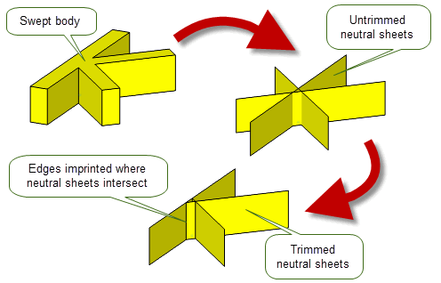

| |
Mid-Surface Generation |
| <<< Sewing and Knitting | Chapters | Extending Sheets And Surfaces >>> |
In Parasolid, the term mid-surface generation refers to the creation of neutral sheets from faces of a solid body, or faces from sheet bodies and the subsequent trimming of them so as to create a sheet body representation of the original .
For an example of this functionality, see the code example in the
C++\Code Examples\Modelling\MidSurface
Generation\Midsurface
From
Body
folder, located in
example_applications
in your Parasolid installation folder.
Neutral sheets are generally used to perform finite element analysis of thin-walled parts. They allow you to represent a solid model containing thin sections as a collection of sheet bodies which can then be discretized and analysed.
|
Note: This functionality does not support facet bodies. |
You can think of creating neutral sheets from a solid body as the opposite process to creating a solid body by thickening a series of sheets.
There are two stages involved in creating neutral sheets:
|
Note: The combination of PK_FACE_make_neutral_sheet_2 and PK_BODY_trim_neutral_sheets_2 does not provide a complete solution for generating mid-surfaces. |
PK_FACE_make_neutral_sheet_2 is one of several tools that you can use to create a set of neutral sheets for a solid body or for sheet bodies. Other methods include:
PK_FACE_make_neutral_sheet_2 creates a neutral sheet between two arrays of faces,
left_faces
and
right_faces
. The surfaces of the
left_faces
may or may not be offsets (to within the specified tolerance) of the corresponding surfaces of the
right_faces
, (see “Supplying construction methods to create neutral sheets”, for more information). The faceset pairs should be selected such that the resulting neutral sheet is not disjoint.
In addition to the faces themselves, you need to provide a
placement
parameter that describes the exact position of the resulting neutral sheets between the
left_faces
and
right_faces
. The surfaces of the face arrays are then used to create other surfaces (the neutral surfaces) that lie between them at the position defined by the supplied
placement
. For example, if
placement
is 0, then the resulting neutral surfaces are halfway between the surfaces on the given face arrays. The neutral surfaces are then attached to a sheet which is then returned.
Figure 48-1 shows a trivial example in which a neutral sheet is created mid-way between two cylindrical surfaces. Since
placement
is 0, the resulting neutral sheet is halfway between the inside and outside of the cylindrical block.
Figure 48-1 Simple single face example
Figure 48-2 shows a slightly more complex example in which a single neutral sheet is created from
left_faces
and
right_faces
arrays that both contain two faces. In particular, note that by using PK_FACE_make_neutral_sheet_2, a single neutral sheet is created from four faces. This avoids overlap in the trimming result.
Figure 48-2 Creating a neutral sheet from two arrays of faces
If the left and right faces do not all share the same surface, then a neutral sheet that contains multiple faces may be created. Figure 48-3 shows a simple example that demonstrates this.
Figure 48-3 Creating a multiple face neutral sheet from two arrays of faces
In practice, however, you will want to create neutral sheets for an entire body or for sheet bodies, rather than just some of it. To do this, you need to make multiple calls to Parasolid functions, and the techniques you use will depend on the nature of the bodies involved. For the body shown in
Figure 48-3, because all pairings of
left_faces
and
right_faces
are offsets of each other, you can use PK_FACE_make_neutral_sheet_2 to create neutral sheets for the entire body.
Figure 48-4 illustrates how to do this.
A total of two calls to PK_FACE_make_neutral_sheet_2 are required, with
left_faces
and
right_faces
specified as follows:
left_faces |
right_faces |
|---|---|
[ E, F, G ] |
[ A, B, C, D ] |
[ L, M ] |
[ N, O ] |
Notice that face F only needs to be specified in the
left_faces
array once, even though there are two faces in the
right_faces
array (B and C) that are associated with it.

Figure 48-4 Creating neutral sheets for a body
Note: Neither the order of the calls to PK_FACE_make_neutral_sheet_2, nor which faces are
left_faces
and which faces are
right_faces
is important in order to create these neutral sheets. |
The neutral sheets created by PK_FACE_make_neutral_sheet_2 may be untrimmed. You need to use PK_BODY_trim_neutral_sheets_2 to perform this task; see Section 48.3, “Trimming neutral sheets”.
The
make_sheet
option enables you to test the suitability of the supplied pairs of faces for the operation before a sheet is generated. If PK_LOGICAL_true, a neutral sheet is created. If PK_LOGICAL_false, no neutral sheet is created but the construction data is still reported in the Parasolid Report.
The
overlap
option enables you to control the face pair detection stage of the neutral sheet creation algorithm. It allows you to specify whether the test is based on the extent of the underlying surface of the faces, or on the extent of the faces themselves. It takes the following values:
|
Face overlaps will be considered. If the faces sets do not overlap then neutral sheets are not created. |
Figure 48-5 illustrates this option using a model split with a rib. The upper faces (marked A and B in the image) on each side of the rib share a common planar surface, and the lower faces (marked C and D) on each side of the rib also share a common planar surface.
With the default behaviour, specifying faces A and C would be detected as a pair and if
make_sheet
is set to PK_LOGICAL_true, a neutral sheet is created. With the option set to PK_neutral_face_overlap_yes_c these faces would be rejected as a pair since they do not overlap and therefore a neutral sheet is not created.
Figure 48-5 Detecting overlapping faces
Note: If you are supplying
left_faces
and
right_faces
from sheet bodies, Parasolid will attempt to determine the correct orientation for both face sets. If the correct orientation for a face set cannot be determined, a Parasolid Report of type PK_REPORT_record_1_t will be returned with a status PK_REPORT_1_fa_unoriented_c indicating which faces Parasolid could not determine an orientation for. In this case Parasolid will attempt to create a neutral sheet using the reported face sets in the orientation they were provided in. See the
PK Interface Programming Reference Manual for PK_FACE_make_neutral_sheet_2 for more information on the local statuses returned. |
You can optionally choose to construct neutral sheets using the
n_methods and methods
options. The following table provides a brief description of these options.
|
The number of construction methods that can be used. If the value is set to 0, then the default PK_neutral_method_mid_offset_c construction method is used. |
|
|
The array of construction methods that are used to construct neutral sheets. This can be one of:
Figure 48-6 illustrates these methods. |
Figure 48-6 Construction methods for generating neutral sheets
The thickness, placement, tolerance and offset values determined by PK_FACE_make_neutral_sheet_2 are returned in the Parasolid Report with the value PK_REPORT_record_type_3_c. See PK_FACE_make_neutral_sheet_2 for more information.
By default, PK_FACE_make_neutral_sheet_2 fills any holes and extends gaps in the resulting neutral sheets to make them large enough for trimming purposes. However, you can turn this behaviour off using the
extend_and_fill_holes
option. Using the same example as
Figure 48-4,
Figure 48-7 shows the differences in the results created when changing this option.
Figure 48-7 Choosing whether to extend and fill holes when creating neutral sheets
The
have_tolerance
and
tolerance
options can be used to pass in a tolerance value to the left and right faces. If
have_tolerance
is PK_LOGICAL_true, then
tolerance
can be used to specify a tolerance value. If
have_tolerance
is PK_LOGICAL_false, then
tolerance
is ignored and faces will only be considered offsets of each other if their surfaces are offsets to within Parasolid precision. The
have_tolerance
option should be used whenever you supply a
tolerance
.
A tolerant offset should be considered to mean two faces that are offsets of each other to typical modeling tolerances. You should not use this functionality to attempt to create a neutral sheet from two distinctly different faces.
Trimming is performed using PK_BODY_trim_neutral_sheets_2. This takes the original solid body, together with the corresponding neutral sheets you created, and uses the information encoded in the face set pairs to trim the neutral sheets, and scribe edges onto them where required. These edges define either the limits of the neutral sheet or where two neutral sheets meet each other. Once all the edges have been created, any unwanted faces on the sheet are deleted.
An edge can be created on a neutral sheet for one of three reasons:
Figure 48-8 (a) shows a simple swept profile. There are 3 face set pairs in this example, and the corresponding untrimmed neutral sheets are shown, together with the neutral sheets after trimming.
Figure 48-8 A simple swept body
Figure 48-9 shows another swept body, this time with a boss added. There are two face set pairs in this example, one for the horizontal plate with the boss and one for the upright. The resulting trimmed neutral sheets are shown in (b). Notice that, in the resulting trimmed sheets, the edge around the boss has been projected onto the corresponding neutral sheet.
Figure 48-9 Swept body with a boss added
A final example is shown in Figure 48-10 in which there are two face set pairs, one for the base plate and one for the tab. Notice that the neutral sheet of the base plate has an edge in the middle where two sheets meet.
Figure 48-10 Neutral sheets for a solid plate with a tab
By default, PK_BODY_trim_neutral_sheets_2 ignores small faces that do not come from face set pairs, such as blend faces and sliver faces. The supplied neutral sheets are trimmed so as to maintain the original connectivity of the solid body. In the majority of cases, this produces the result that you are interested in. However, you can use the
ignore
option to specify that the neutral sheets are trimmed to exactly the limits of the original face set pairs. This ensures that the trimmed neutral sheets are no larger than the face set pairs from which they are derived, but may not maintain the connectivity of the original body.
Figure 48-11 shows an example that contains several blend faces. By default, these blend faces are ignored, and the neutral sheets are trimmed so as to form a closed sheet body as shown. However, if
ignore
is set to PK_neutral_ignore_fa_no_c, then the resulting trimmed neutral sheets do not form a closed body. This result might be useful if, for example, you wanted to create a closed body by adding face-face blends between each trimmed sheet.
Figure 48-11 Ignoring small faces when trimming neutral sheets
For an example of this functionality, see the code example in the
C++\Code Examples\Modelling\Midsurface Generation\Ignore
Small
Faces
folder, located in
example_applications
in your Parasolid installation folder.
Sometimes, creating neutral sheets results in faces that overlap each other in the resulting trimmed sheets. This is particularly true if you are creating neutral sheets from models that do not have a uniform thickness. You can use the
overlap
option in PK_BODY_trim_neutral_sheets_2 to control how to deal with these overlapping faces to achieve the best result. This option takes the following values:
|
Overlapping faces are ignored in the result body. This is the default. |
|
|
Detect whether faces in the trimmed sheets are overlapping and create a PK_REPORT_1_fa_overlap_c record in the Parasolid report for each set of overlapping faces. |
|
|
Repair overlapping faces by retaining one connected set of overlapping faces and deleting the other. The overlapping faces that remain are noted with a PK_REPORT_1_fa_overlap_c record in the Parasolid report for each set of faces. |
Figure 48-12 shows a simple example that shows the effect on the final trimmed sheets of repairing overlapping faces.
Figure 48-12 Repairing overlapping faces when trimming neutral sheets
By default, when trimming neutral sheets that contain more than one surface, faces are only trimmed against other neutral sheets. However, in some configurations, this means that the resulting neutral sheets are bigger than they should be, extending beyond the faces of the original body. In these cases, you can use the
trim_method
option to trim to the side faces in the original body as well.
Figure 48-13 shows a simple example in which the default result from PK_BODY_trim_neutral_sheets_2 extends past the original body. By setting
trim_method
to PK_neutral_trim_method_sides_c, the neutral sheets are trimmed to the side faces of the original body as well, thereby eliminating the unwanted extension.
Figure 48-13 Controlling how to trim neutral sheets with more than one surface
Like PK_FACE_make_neutral_sheet_2, you can use the
extend_and_fill_holes
option to choose whether or not to extend sheets and fill holes when trimming neutral sheets. See Section 48.2, “Creating neutral sheets”, for more information on this option.
Each face on a neutral sheet has usually arisen from the projection of two faces on the target body (one on each side). For example, in Figure 48-9 the top side of the circular face is the projection of the whole of the circular face on the top of the boss, the underside is part of the projection of the rectangular face on the underside of the target body. Similarly, the surrounding face is part of the projection of the rectangular face around the boss and the face on the underside.
Currently, the trimming function gathers and returns this information. For each side of every face on each neutral sheet it returns a list of faces on the target which project onto this face on the neutral sheet. There is usually one target face for each side. However, sometimes there may be 2 on one side, or there may be none.
PK_FACE_make_neutral_sheet_2 and PK_BODY_trim_neutral_sheets_2 contain an
update
option to maintain consistency when rebuilding models built in older versions of Parasolid. See Section 63.5.2, “Update control”, for information.
| <<< Sewing and Knitting | Chapters | Extending Sheets And Surfaces >>> |